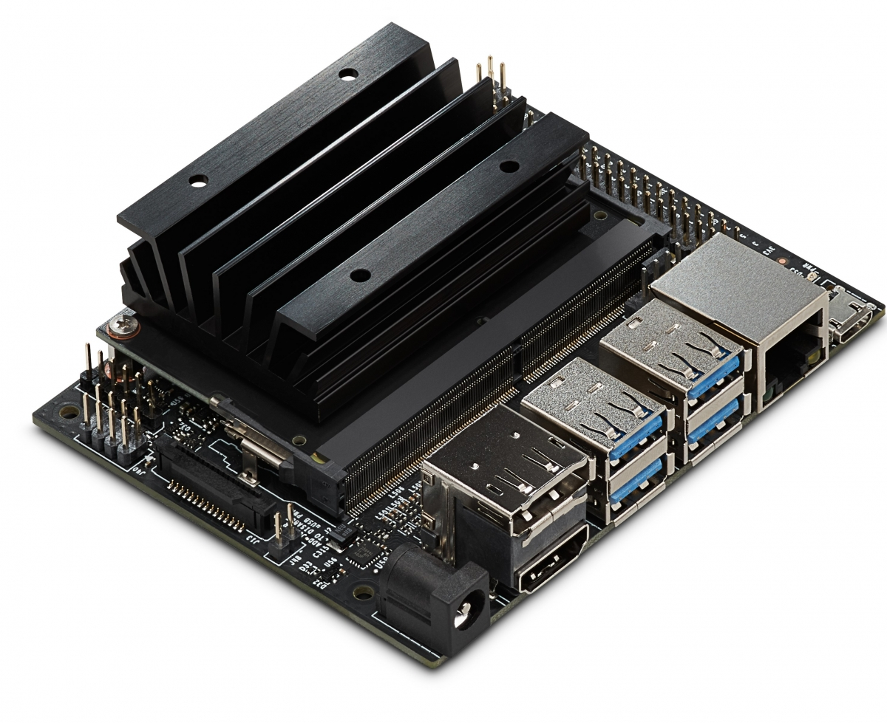
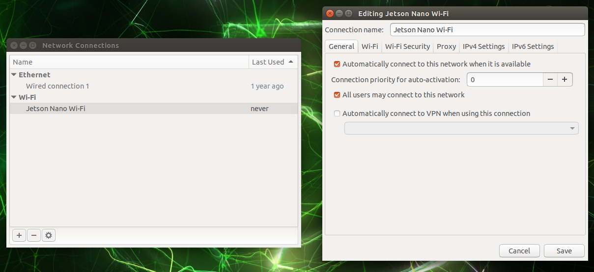

Clover and Jetson Nano
Jetson Nano overview
Jetson Nano is a system-on-a-module by Nvidia. It is built on a Tegra X1 platform. With four ARM Cortex-A57 cores clocked at 1.4 GHz, 4 GB of RAM and a relatively powerful GPU, it is more capable than a Raspberry Pi 3 series of single-board computers.

Jetson Nano developer kits come with a carrier board that has USB 3.0, CSI and Ethernet ports, as well as a row of GPIO pins. The carrier board is only slightly larger than a Raspberry Pi computer, making it a viable option for an onboard computer.
The default carrier board does not have a Wi-Fi chip installed. You can use a USB Wi-Fi adapter or install a Wi-Fi card in the M.2 slot on the carrier board. Be sure to check your adapter for compatibility with the Jetson Nano!
Setting up
Nvidia provides an SD card image with an operating system based on Ubuntu Linux 18.04 for Jetson Nano. This image is a good starting point for ROS and Clover installation.
Initial system setup
Be sure to check the official Getting Started instructions for the Jetson Nano developer kit!
For the initial setup you'll need an HDMI or DisplayPort monitor, a keyboard and a mouse. Download the Jetson Nano developer kit image and flash it on a microSD card (a 32+ GB card is strongly recommended). Plug the card into the Jetson Nano module, connect your monitor, keyboard, and mouse to the carrier board, and power up the Jetson Nano.
Jetson Nano can be powered by a microUSB cable, but we strongly suggest using a good power supply and a barrel jack connector. You'll need to put a jumper on the J48 pins (they are right next to the CSI connector on the carrier board).
Accept the Nvidia EULA and follow the installer prompts. The system will reboot after installation. Login with your username and password.
We strongly recommend to choose the English system language/locale for Jetson Nano to avoid ROS compatibility issues!
If you've installed a Wi-Fi adapter, you may want to configure your Jetson Nano to connect to your Wi-Fi network automatically. Once the system is installed and booted up, click on the "wireless network" icon in the top bar, choose "Edit Connections..." in the drop-down menu, select your network name from the list and click on the gear icon at the bottom of the window.

Go to the "General" tab in the newly-opened window and check the "All users may connect to this network" checkbox. Press the "Save" button to close the window.
You may want to make sure you're able to access your Jetson Nano over the network. The image already has SSH enabled, and it's more convenient to perform next steps using the remote shell.
Installing ROS
Ubuntu 18.04 is officially supported as a base system for ROS Melodic. Be sure to check the official installation instructions!
Add OSRF keys and repositories to your system:
sudo apt-key adv --keyserver 'hkp://keyserver.ubuntu.com:80' --recv-key C1CF6E31E6BADE8868B172B4F42ED6FBAB17C654
sudo sh -c 'echo "deb http://packages.ros.org/ros/ubuntu $(lsb_release -sc) main" > /etc/apt/sources.list.d/ros-latest.list'
sudo apt update
Install base ROS packages:
sudo apt install ros-melodic-ros-base
Enable your ROS environment and update your rosdep cache:
source /opt/ros/melodic/setup.bash
sudo rosdep init
rosdep update
You may wish to put the
source /opt/ros/melodic/setup.bashline at the end of your user's.profilefile.
Install pip for Python 2 (while this is not technically a part of ROS, some dependencies are only installable using pip):
sudo apt install curl
curl https://bootstrap.pypa.io/get-pip.py -o get-pip.py
sudo python ./get-pip.py
Building Clover nodes
Create a "workspace" directory in your home folder and populate it with Clover packages:
mkdir -p ~/catkin_ws/src
cd ~/catkin_ws/src
git clone https://github.com/CopterExpress/clover
git clone https://github.com/CopterExpress/ros_led
git clone https://github.com/okalachev/vl53l1x_ros
Install dependencies using rosdep:
cd ~/catkin_ws
rosdep install --from-paths src --ignore-src -y
Install geographiclib datasets (they are required for mavros, but are not packaged with it):
curl https://raw.githubusercontent.com/mavlink/mavros/master/mavros/scripts/install_geographiclib_datasets.sh -o install_geographiclib_datasets.sh
chmod a+x ./install_geographiclib_datasets.sh
sudo ./install_geographiclib_datasets.sh
Install development libraries for OpenCV 3.2 (recent Jetson Nano images have OpenCV 4.1.1 preinstalled; using this version will result in build failures):
sudo apt install libopencv-dev=3.2.0+dfsg-4ubuntu0.1
Finally, build the Clover nodes:
cd ~/catkin_ws
catkin_make
You may also want to add udev rules for PX4 flight controllers. Copy the rules file to
/etc/udev/rules.dand runsudo udevadm control --reload-rules && sudo udevadm trigger.
Running Clover nodes
Set up the workspace environment:
cd ~/catkin_ws
source devel/setup.bash
Configure the launch files to your taste and use roslaunch to launch the nodes:
roslaunch clover clover.launch
You may want to start the Clover nodes automatically. This can be done with
systemd: look at service files forroscoreandcloverthat are used in our image and adjust them as necessary.
Caveats
CSI cameras
Jetson Nano currently does not support older Raspberry Pi v1 cameras (that are based on the Omnivision OV5647 sensor). Raspberry Pi v2 cameras (the ones that use Sony IMX219) are supported, but are not available as Video4Linux devices.
Fortunately, these cameras are available using GStreamer. You can try using the gscam ROS package or our jetson_camera node. The latter requires you to build OpenCV 3.4 from source with GStreamer support.
The GStreamer pipelines are available at JetsonHacksNano CSI camera repository.
You may also notice that the camera image has a red tint that is more pronounced near the edges. This can be fixed by image signal processor tuning. Generally this should be done by your camera manufacturer; here is a sample ISP configuration from Adrucam
LED strip
Jetson Nano currently does not support LED strips over GPIO.